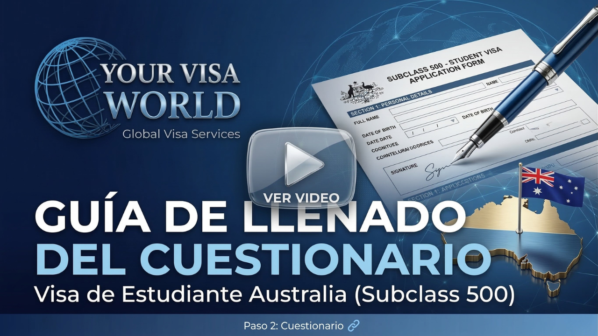
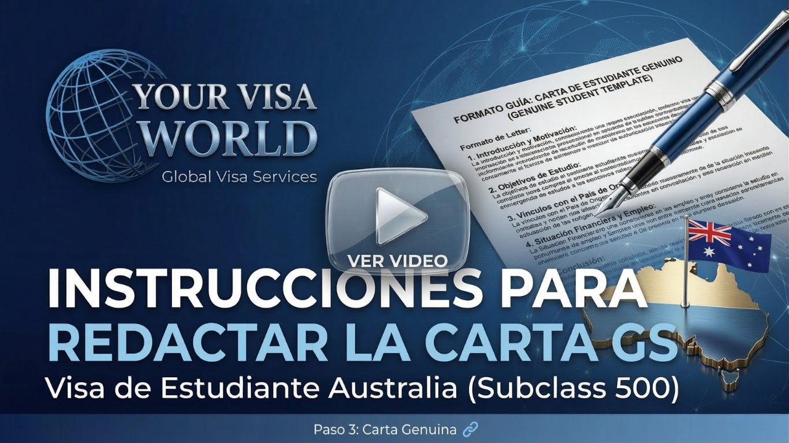
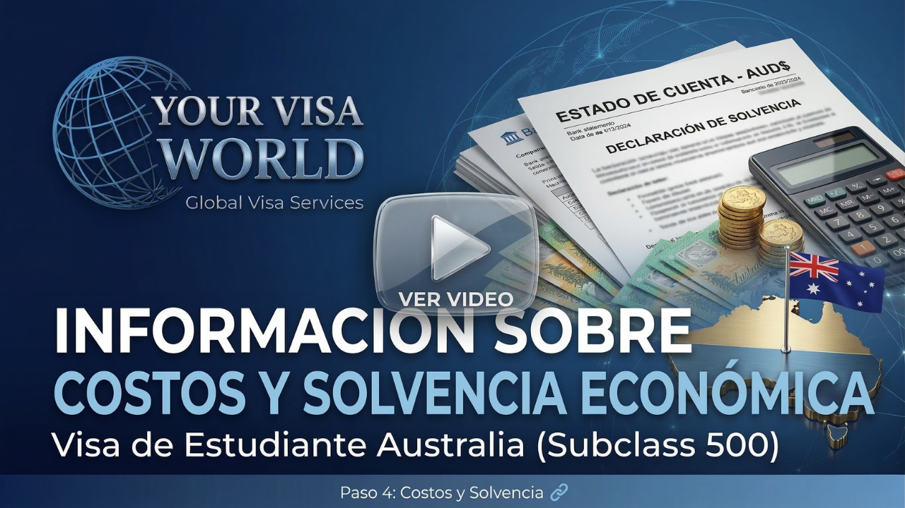

Acuerdo de Nivel de Servicios
Antes de comenzar tu proceso de solicitud de visa, es fundamental que leas y comprendas el alcance del servicio que ofrecemos en Your Visa World.
Nuestro servicio es un servicio de medio y no de resultado. Esto significa que nos comprometemos a brindarte una asesoría completa, profesional y diligente a lo largo de todo el proceso de solicitud. Sin embargo, la decisión de otorgar o denegar la visa depende exclusivamente de los oficiales de visa del Departamento de Asuntos Internos de Australia (Home Affairs), y está fuera del control de nuestra empresa.
Al firmar el Acuerdo de Nivel de Servicios, confirmarás que has leído, entendido y aceptado estos términos, y que comprendes que ningún asesor ni agencia puede garantizar el resultado de una solicitud de visa.
Importante: Ningún asesor de visado puede garantizar la aprobación de una solicitud. La decisión final corresponde siempre a los oficiales de visa del Departamento de Asuntos Internos de Australia.
Cuestionario de Aplicación
El cuestionario de aplicación es el documento base que nos permitirá conocer tu situación personal, académica y financiera para construir tu caso de la manera más sólida posible.
Descarga el cuestionario, complétalo con toda la información solicitada y envíanoslo antes de nuestra reunión de seguimiento. En el video a continuación encontrarás una explicación detallada de cada sección.
Cómo completar el cuestionario

Carta de Estudiante Genuino
La Carta de Estudiante Genuino (Genuine Student Statement) es uno de los documentos más importantes de tu aplicación. En ella deberás demostrar a los oficiales de visa que tu intención de estudiar en Australia es real y coherente con tu situación personal, profesional y académica.
Deberás explicar, entre otros aspectos: por qué elegiste Australia, por qué elegiste este curso en particular, de qué manera contribuirá a tu desarrollo profesional, y cuáles son tus planes al regresar a tu país de origen.
A continuación encontrarás un modelo orientativo y un video con instrucciones para redactarla correctamente. Recuerda que la carta debe ser personal, auténtica y en tus propias palabras.
Cómo redactar la Carta de Estudiante Genuino

Lista de Documentos
Personalizada para tu caso
La lista de documentos requeridos para tu aplicación no es genérica. Cada caso presenta particularidades únicas que determinan exactamente qué documentos deben incluirse y en qué formato.
Por eso, la lista de documentos se construirá de forma personalizada durante nuestra reunión de caso. En ese encuentro analizaremos tu situación particular —académica, laboral, familiar y financiera— y definiremos juntos qué documentación necesitarás preparar.
Asegúrate de completar los pasos anteriores antes de esa reunión para que podamos aprovechar el tiempo al máximo.
Costos y Solvencia Económica
Para completar tu aplicación a la visa Subclass 500 deberás tener en cuenta los siguientes costos asociados al proceso:
Solvencia Económica Requerida
Además de los costos del trámite, el gobierno australiano exige que el solicitante pueda demostrar solvencia económica suficiente para sustentarse durante su estadía. El monto de referencia es:
Este valor es una guía establecida por el Departamento de Asuntos Internos. La cantidad exacta puede variar dependiendo de si viajan acompañantes (cónyuge, hijos), y deberá ser demostrada mediante extractos bancarios, cartas de patrocinio u otros medios aceptados.
Explicación detallada de costos y solvencia

Tu reunión con un asesor
En breve un asesor se pondrá en contacto contigo
Un asesor de Your Visa World coordinará una cita personalizada contigo. Durante esa reunión se abordarán todos los puntos de esta guía, se resolverán tus dudas y se construirá junto a ti la lista de documentos específica para tu caso.
Tu asesor te acompañará a lo largo de todo el proceso de solicitud, brindándote orientación y seguimiento en cada etapa.